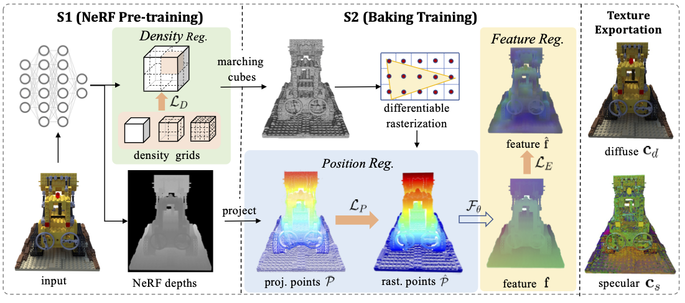

|
ATM-NeRF: Accelerating Training for NeRF Rendering on Mobile Devices via Geometric Regularization Yang Chen1, Lin Zhang1, Ying Shen1, and Yicong Zhou3 1School of Software Engineering, Tongji University, Shanghai, China 2Department of Computer Science, University of Southern California, Los Angeles, USA 3Department of Computer and Information Science, University of Macau, China |
Introduction
This is the website for our paper ATM-NeRF, which aims at accelerating training for mobile NeRF rendering via geometric regularization terms.

Source Codes
Note: all these codes related to ATM-NeRF are implemented by Pytorch and we run them on Nvidia 3090 Ti.
Demo Videos
The following are two demo videos demonstrating the performance of our WESNet in extrinsics calibration for synthesizing surround-view images and correction, respectively.
Last update: Feb. 1, 2024